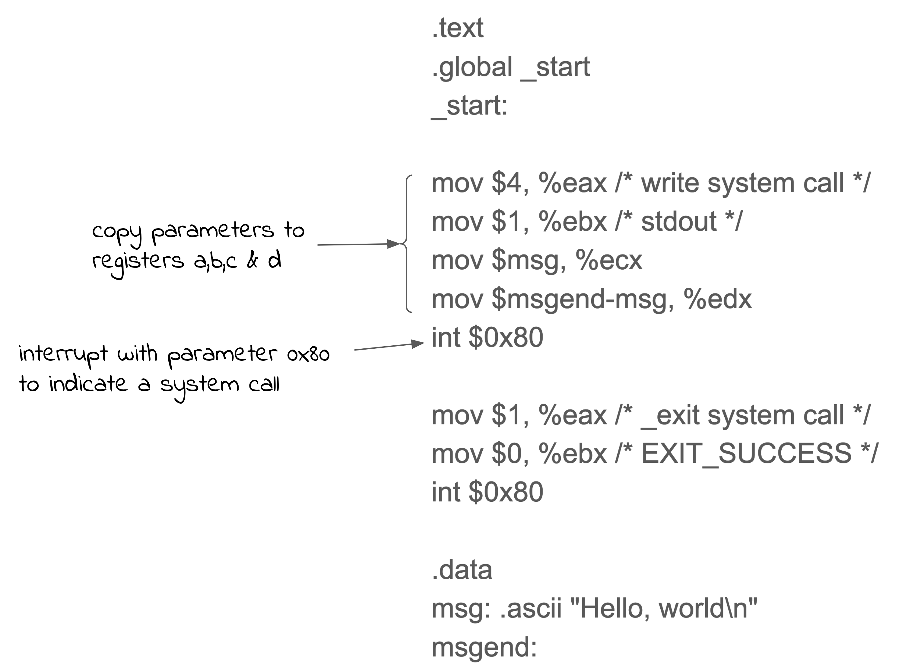

1.5 More Computer Architecture¶
The design of computer central procesing units is a very big topic. There is a huge range of instruction types, register structures, memory structures and other features found in modern computers. A full discussion of computer architectures is out of scope for this “book”. However, there are a few other features of computure architecture that you need to know in order to understand how computers work and what underlies application programs.
I’ve discussed simple instructions that move data between registers an memory, as well as arithmetic and logic operations on data. Another important class of instructions are those that transfer control from one part of a program to another. These are essential for building loops and calling functions. They are also used to invoke services provided by the operating system (see later chapters).
The simplest transfer of control instruction is the “jump”. This instruction simply loads a new value into the Program Counter and so the next instruction will be found at that new memory location.
Another type of control transfer is the conditional jump. This type of instruction allows you to test some condition, eg was the result of the last arithmetic operation zero? The jump occurs if the condition is true, otherwise the PC is incremented as usual and the next instruction after the jump is executed. The conditional jump type of instruction is essential for writing programs. That’s how we implement the “if” statement of a high level language, or how we decide to repeat a loop.
We also need to transfer control when we call a function (or the old name “subroutine”). But in this case we also need to remember how to get back to the calling program. So as well as changing the PC to a new value, we also need to save the old value of the PC so the “return” of the function can get back to the point just after the call. The simplest way this is implemented is to save a copy of the PC (incremented to the next instruction) in a register, then jump as usual. The function can then further save the PC copy into memory and eventually use it with the return jump. In modern computers the return address is saved in a data structure called a “stack”.
The Stack¶
The stack data structure is probably one of the most important ways of arranging data in the memory of a computer. It is a way of maintaining the context of a running program and allowing easy re-use of functions.
The idea is actually very simple. Imagine a stack of paper, with each sheet describing the job you are currently working on. Every now and then, the boss comes along and puts another sheet on the stack and you stop working on the old task and start working on the new one. Eventually you finish a task and take the sheet off the stack and discard it. Now you have the previous sheet (task) on top of the stack so you pickup where you left off and continue work on that task.
{kind=link}
This continues with new tasks arriving and building the stack, then finishing tasks and removing sheets from the stack. Eventually you might get the to botton of the stack and have no jobs to do. Then you can just go into idle mode waiting for a job sheet.
Inside the computer the stack data structure is very similar. It is an area of memory that you can add data to, and remove in order of arrival. To keep track of the top of the stack the address of the top entry is saved. This is usually in a register for fast access but can also be in main memory.
{kind=link}
In this case the memory is shown with the smallest address at the top and the stack appears to be growing down. It doesn’t matter how we draw the diagram, or if the stack goes from low address to high address. The principle remains the same: we add and remove items from the “top”.
The stack is used to keep the return address when calling a function by simply adding it to the top (also called “pushing”). To return to the calling program, the top entry is removed from the stack (or “popped”) and placed into the PC. When something is pushed onto the stack or popped off the stack, the top-of-stack address is updated appropriately.
As well as the return address, the arguments to a function and the local variables are also placed on the stack. When the function returns to the calling program, all the arguments and local variables are popped from the stack.
{kind=link}
Interrupts¶
There is one more transfer of control that is important to understand and that’s the “interrupt”. An interrupt is like a forced function call that occurs between instructions and without your program noticing. This seems a weird concept - what causes it to happen? What function gets called? Why is this necessary?
The reason we have interrupts is to do with input/output operations. Let’s say our program is executing some major calculation that is going to take a while and some device needs urgent attention. For example, a user types a character on a keyboard, or data has arrived on a network interface. There may be very little time available to process the input data before the next lot of data arrives and overwrites the first. We need to some how interrupt the running program, process the data, and restart the program. Preferably without the program noticing. That’s what a computer interrupt is for.
When the interrupt occurs, the value of the PC and any other critical program “state” information is saved. The PC is then changed to point to the program that will handle the interrupt. When it is finished, it restores all the state and restarts the original program where it left off.
In practice, it’s a bit more complicated than I describe because there are complications like what happens if you are halfway through executing an instruction? But this is the general idea.
The location of the program to handle the interrupt depends on the type of interrupt. As well as devices demanding attention, interrupts also occur as a result of errors. For example, divide by zero will cause an interrupt in some computers and there would be a special function to handle that interrupt.
The other very important use of interrupts is for a special function call known as a “system call”. I’ll describe the idea of “user mode” and “system mode” operation later, but to invoke some service in the operating system we use an instruction that causes and interrupt (the system call instruction) and transfers control into the operating system.
{kind=link}